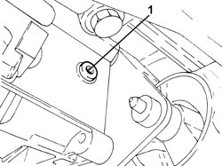
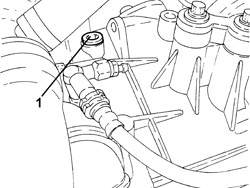
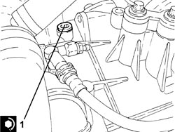
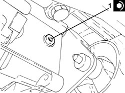
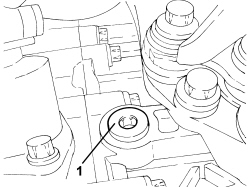
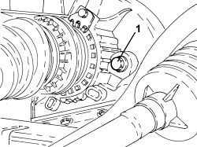
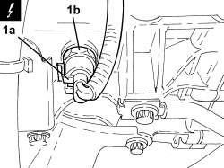

0010T41 MANUAL GEARBOX OIL CHECK LEVEL AND TOP UP IF NECESSARY
- Path
- Procedures > 00 MAINTENANCE > 0010 NEW VEHICLES AND MAINTENANCE > 0010T VEHICLE FLUIDS > 0010T41 MANUAL GEARBOX OIL CHECK LEVEL AND TOP UP IF NECESSARY
- Kind
- repair procedure (removal / refitting; the operation number is the code)
- Applies to
- engines: 1.8, 2.2, 1.9 JTD 8v, 1.9 JTD 16v; all production periods
- Interactive page
- https://sloeber94.github.io/elrnDB-fCrm/en/#/194000216
Applies to: engines: 2.2; all production periods
1. Undo the gearbox oil level check plug.
- Check that the level of the oil just touches the lower edge of the inspection hole.

Applies to: engines: 2.2; all production periods
1. If necessary, unscrew the filler plug and top up with specified oil until this emerges from the inspection hole.
Component | Type | Description | Classification | Qty. | Validity |
|---|---|---|---|---|---|
MANUAL GEARBOX | Synthetic oil | TUTELA CAR MATRYX | SAE 75W-85 - API GL-4 | 1.5 kg | 2.2 |

Applies to: engines: 2.2; all production periods
1. Tighten the filler cap to the recommended torque.
Component | Fastening | dia | Value (daNm) | Validity |
|---|---|---|---|---|
Gearbox oil filler plug | - | - | (gearbox side) 2.2 - 4.1 | 2.2 |

Applies to: engines: 2.2; all production periods
1. Tighten the transmission fluid level check plug to the specified torque.
Component | Fastening | dia | Value (daNm) | Validity |
|---|---|---|---|---|
Transmission fluid level check plug | - | M22x1.5 | (gearbox side) 2.5 | 2.2 |

Applies to: engines: 1.9 JTD 8v, 1.9 JTD 16v; all production periods
- Position the vehicle on a lift.
Op. 7055B54 UNDER ENGINE PROTECTION/GUARD - R.R.
1. Remove the engine oil filler plug.

Applies to: engines: 1.9 JTD 8v, 1.9 JTD 16v; all production periods
1. Unscrew the engine oil drain plug and allow the engine oil to drain out into a suitable container.

Applies to: engines: 1.9 JTD 8v, 1.9 JTD 16v; all production periods
- Clean the drain plug and the plug seat to remove any trace of sealant.
- Apply sealant (LOCTITE 510 or equivalent) to the plug threads and tighten into its seat to the specified torque.
Component | Fastening | dia | Value (daNm) | Validity |
|---|---|---|---|---|
Gearbox oil drain plug | - | M18x1.5 | (gearbox side) 1.7 | 1.9 JTD 8v 1.9 JTD 16v |
- Add fluid of the specified type and quantity through the filler opening.
Component | Type | Description | Classification | Qty. | Validity |
|---|---|---|---|---|---|
MANUAL GEARBOX | Synthetic oil | TUTELA CAR MATRYX | SAE 75W-85 - API GL-4 | 2.4 litres 2.08 kg | 1.9 JTD 8V 1.9 JTD 16V |
- Clean the drain plug and tighten it to the recommended torque.
Component | Fastening | dia | Value (daNm) | Validity |
|---|---|---|---|---|
Gearbox oil filler plug | - | M18x1.5 | (gearbox side) 2.4 - 3.6 | 1.9 JTD 8v 1.9 JTD 16v |
Op. 7055B54 UNDER ENGINE PROTECTION/GUARD - R.R.
- Remove the vehicle from the lift.
Applies to: engines: 1.8; all production periods
Op. 7055B54 UNDER ENGINE PROTECTION/GUARD - R.R.
1. Undo the transmission fluid level control plug and check that the fluid reaches the bottom edge of the inspection opening.

Applies to: engines: 1.8; all production periods
1. If necessary, disconnect the electrical connection (1a), remove the reversing lights switch (1b) and then top up with the recommended fluid.
Description | Connector | |
|---|---|---|
1a | Reversing lights switch |
Component | Type | Description | Classification | Qty. | Validity |
|---|---|---|---|---|---|
MANUAL GEARBOX | Oil | TUTELA CAR MATRYX | SAE 75W-85 - API GL-4 | 1.6 litres | 1.8 |

Applies to: engines: 1.8; all production periods
- Fit the reversing lights switch tightening it to the recommended torque and connect the electrical connection.
Component | Fastening | dia | Value (daNm) | Validity |
|---|---|---|---|---|
Reversing light switch | - | - | 2.0 | 1.8 |
- Tighten the transmission fluid level check plug to the specified torque.
Component | Fastening | dia | Value (daNm) | Validity |
|---|---|---|---|---|
Transmission fluid level check plug | - | M18 | 0.3 ÷ 0.5 + 180° | 1.8 |
Topics linked from this page (2)
Topics that link to this page (9)
- S022 GEARBOX NOISE - IN NEUTRAL
- 0010T40 CHANGE MANUAL GEARBOX OIL
- 1020D26 FLYWHEEL SIDE OIL SEAL COVER - R.R AND REPLACE GASKETS
- 1020D38 FLYWHEEL SIDE OIL SEAL - REPLACE
- 1024B10 ENGINE FLYWHEEL - R + R FOR VERSIONS WITH MANUAL GEARBOX
- 1810A20 CLUTCH - R + R
- 1820B30 CLUTCH HYDRAULIC ACTUATOR - R.R.
- 2110A10 MANUAL GEARBOX AND DIFFERENTIAL - R + R
- 2110C30 GEARBOX REAR COVER - R + R.